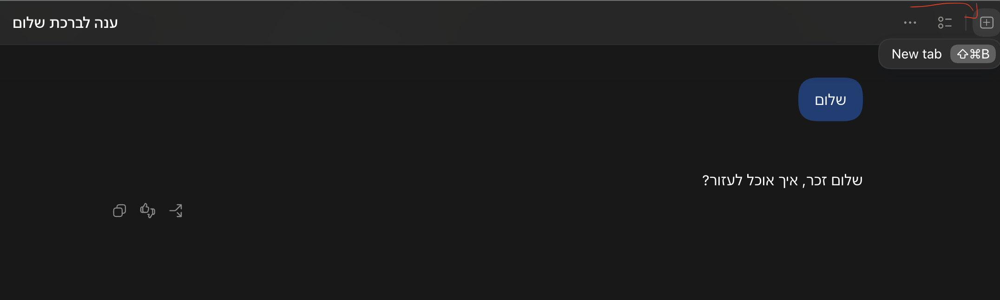
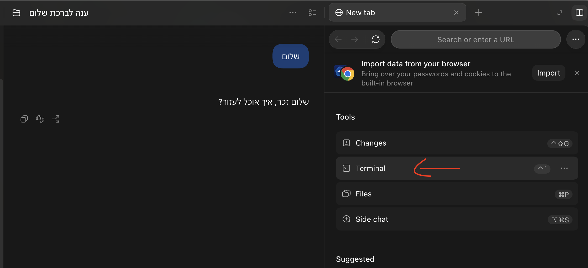

פותחים חשבון, מתקינים גיט, ונותנים לסוכן לגבות כל יום את הסקילים והזיכרון העסקי שבנית, כדי ששום דבר לא ילך לאיבוד.
github.com. בדוק אותה בשורת הכתובת למעלה. אל תיכנס דרך פרסומת בגוגל, ואל תוריד שום אפליקציה. גיטהאב חינמי לגמרי: אם מבקשים ממך כרטיס אשראי, אתה במקום הלא נכון.


git --versiongit versionis not recognizedgit --version. אם גם עכשיו זה לא עובד, עשה ריסטארט למחשב.
git config --global user.name "Paz Ben Dakon"git config --global user.email "your-email@gmail.com"git config --global --listuser.name=Paz Ben Dakon ו־user.email=… עם המייל שלך.
paz-agenthttps://github.com/your-username/paz-agent (במקום your-username יופיע שם המשתמש שלך).env, או משהו עם המילים token, key או secret, אל תאשר. כתוב לו "תוציא את זה" ותשלח לי צילום מסך.
git --version מחזירה מספר גרסהאת מה שנשאר נעשה ביחד במפגש.